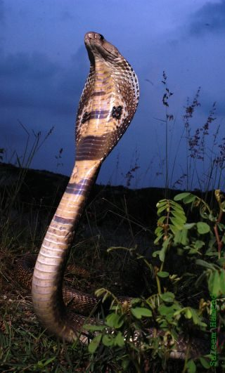

नागIndian Cobra
Naja naja · Elapidae · REP-0005

- Scientific name
- Naja naja (Linnaeus, 1758)
- Family
- Elapidae
- Hindi
- नाग
- Status here
- native
- IUCN
- not evaluated
When to look कब देखें
Present all year.
नाग / Indian Cobra
Naja naja (Linnaeus, 1758) — Elapidae
नाग — भारतीय उपमहाद्वीप का सबसे प्रसिद्ध और अत्यधिक विषैला सांप, जो इंसानी बस्तियों और खेतों के आस-पास रहना पसंद करता है। खतरा महसूस होने पर यह अपने शरीर के अगले हिस्से को ऊपर उठाकर और गर्दन की पसलियों को फैलाकर एक चौड़ा फन (hood) तान लेता है। फन के पीछे सफ़ेद और काले रंग का चश्मे जैसा निशान (spectacle mark) इसकी सबसे प्रमुख पहचान है। यह मुख्य रूप से चूहों का शिकार करके फसलों की रक्षा करता है, लेकिन इसका ज़हर इंसानों के लिए जानलेवा है। हिंदू संस्कृति में इसे भगवान शिव का आभूषण माना जाता है और नाग पंचमी पर इसकी पूजा की जाती है।
Quick Identification त्वरित पहचान
| Feature | Description |
|---|---|
| Form | Slender to moderately heavy-bodied snake; smooth, glossy scales without pits |
| Hood | Distinctive ability to expand the neck ribs to form a wide, rounded hood when threatened |
| Hood Mark | A black and white "spectacle" design (resembling a pair of spectacles) on the dorsal side of the hood |
| Underside | Two dark spots near the edges on the ventral side of the hood, separated by light bands |
| Coloration | Highly variable; usually yellowish-brown, olive-brown, or greyish-black; sometimes with faint crossbands |
Field tip: Any large brown or blackish snake that raises the front third of its body, spreads a wide flat hood, and hisses loudly when cornered is an Indian Cobra. The white-and-black spectacle mark on the back of the hood is diagnostic. Do not approach or corner the snake.
Morphology आकारिकी
Biometrics (typical measurements for adults in northern India):
| Measurement | Range |
|---|---|
| Snout-vent length (SVL) | 100–140 cm |
| Tail length | 20–30 cm |
| Total length | 120–170 cm |
Body: Elongated, cylindrical, with a smooth, glossy texture. The dorsal scales are arranged in 19–23 rows around the midbody, without keels.
Head: Broad, depressed, and scarcely distinct from the neck. The snout is rounded with large nostrils. The eyes are medium-sized with round pupils.
Hood: The cervical vertebrae have long, movable ribs that can be expanded laterally to stretch the loose skin of the neck, forming the characteristic hood used to intimidate threats.
Markings: The classic spectacled cobra displays a conspicuous white-and-black design on the dorsal surface of the hood, resembling a pair of spectacles. The underside of the hood shows two large dark lateral spots on the 15th to 20th ventral scales.
Venom Apparatus: Proteroglyphous dentition, possessing a pair of short, fixed, hollow fangs at the front of the upper jaw, connected to large venom glands located behind the eyes.
Ecological Role पारिस्थितिक भूमिका
Rodent controller. Naja naja is an exceptionally efficient predator of mice and rats. By hunting in crop fields, agricultural bunds, and grain stores, it controls rodent populations that would otherwise destroy crops and transmit diseases, serving as a vital ally to farmers.
Prey and predator. While adults are apex predators, juvenile cobras are eaten by monitor lizards, large birds of prey, and mongooses. Cobras themselves consume frogs, toads, lizards, and small birds, regulating their populations.
Life Cycle / Phenology जीवन चक्र
- Active period: Diurnal and crepuscular. They are active from March to November, entering underground burrows or tree hollows to hibernate during the cold winter months (December–February).
- Mating: Mating occurs in late spring (April–May).
- Egg-laying: Females lay 10 to 30 white, leathery eggs inside rodent burrows, hollow logs, or termite mounds during June–July.
- Egg guarding: The female guards the nest aggressively until the eggs hatch in 50–60 days. Hatchlings are 20–30 cm long and are fully venomous from birth.
Host Plants or Prey आहार
Primary prey items:
- Field Rats (Bandicota spp.) and House Mice (Mus musculus).
- Common Toads (Duttaphrynus melanostictus, AMP-0001) and frogs.
- House Geckos (Hemidactylus spp.) and Garden Lizards (Calotes versicolor, REP-0001).
- Small birds, nestlings, and bird eggs.
Predators / Natural Enemies शत्रु
- Indian Grey Mongoose (Herpestes edwardsi, MAM-0002) — The primary predator of adult cobras, immune to moderate doses of cobra venom.
- Raptors — Serpent Eagles and Black Kites (Milvus migrans, BRD-0011) swoop down to carry off juvenile cobras.
- Bengal Monitor (Varanus bengalensis, REP-0004) — Actively raids nests to dig up and consume cobra eggs.
Agricultural / Human Relevance कृषि प्रासंगिकता
Natural pest control. Cobras save agricultural grain stores from heavy rodent damage. They follow rats directly into their narrow burrows, reaching areas that human traps or domestic cats cannot.
Snakebite statistics. The Indian Cobra is one of the "Big Four" venomous snakes responsible for the majority of snakebite fatalities in rural India. Encounters increase during the monsoon harvest when fields are flooded and snakes seek dry refuge near houses.
Cultural and religious status. Deeply revered in Hindu culture. The cobra is associated with Lord Shiva, who wears it around his neck, and Lord Vishnu, who rests on the multi-headed cobra Sheshnag. During the festival of Nag Panchami, cobras are worshipped, and offerings of milk are traditionally made (though captive snakes are often mistreated for this, which is illegal under wildlife laws).
Safety and First Aid सुरक्षा और प्राथमिक चिकित्सा
[!WARNING]
Venom type: Highly neurotoxic. The venom contains postsynaptic neurotoxins that block nerve-to-muscle signals. Symptoms of a bite include drooping eyelids, difficulty speaking and swallowing, muscle weakness, and eventual respiratory paralysis leading to suffocation.
Precautions when encountered:
- Do not panic. Cobras are generally shy and will escape if a path is open.
- If the snake rears up and spreads its hood, it is issuing a warning. Stand completely still. Avoid sudden movements. Slowly back away to a distance of at least 3 metres.
- Keep home surroundings free of high grass, garbage piles, and firewood stacks, which attract rats and provide hiding spots for snakes.
First aid rules (in case of a bite):
- DO NOT cut the wound to make it bleed.
- DO NOT attempt to suck out the venom by mouth.
- DO NOT apply a tight tourniquet (tight binding), which can cut off blood flow and cause tissue rot.
- DO NOT apply ice, chemicals, or traditional herbal pastes.
- DO NOT waste time visiting traditional healers (ojhas or tantriks).
- DO keep the patient calm and reassure them.
- DO immobilize the bitten limb using a simple wooden splint and bandage, keeping it below the heart level to slow venom spread.
- DO transport the patient immediately to the nearest government hospital or community health center that stocks Polyvalent Anti-Snake Venom (ASV). ASV is the only scientific cure for cobra bites.
Expected Locally स्थानीय रूप से अपेक्षित
Not a field record. Written from published accounts for eastern Uttar Pradesh. No confirmed local sighting yet — if you have seen it, that is what the atlas needs.
अभी तक स्थानीय पुष्टि नहीं। यह विवरण प्रकाशित स्रोतों से है, किसी अवलोकन से नहीं।
Commonly encountered in agricultural villages across Basti district. Sightings peak during the monsoon sowing and harvest seasons (July–October) when water floods rodent burrows, forcing cobras onto elevated field bunds and inside rural homes. Professional snake rescuers are active in Basti town to relocate cobras caught in residential areas.
Distribution वितरण
Global range: Native to the Indian subcontinent, including Pakistan, India, Nepal, Bhutan, Bangladesh, and Sri Lanka.
In India: Distributed throughout the mainland plains and hills up to 2,000 metres in the outer Himalayas.
In Uttar Pradesh: Common resident in all rural, suburban, and forest areas across the state.
In Basti district / eastern UP: Ubiquitous in agricultural fields, orchards, and village settlements.
Range notes: No significant range changes documented.
Research Questions शोध प्रश्न
Anyone can investigate these | कोई भी इन प्रश्नों की जाँच कर सकता है
- How do cobra encounters in your village correlate with the flooding of agricultural fields during the monsoon? / मानसून के दौरान कृषि खेतों में पानी भरने से आपके गाँव में कोबरा मुठभेड़ों का क्या संबंध है? — Keep a record of sighting dates and local rainfall.
- What percentage of local farmers in Basti can correctly identify a Cobra vs. a harmless Rat Snake? / बस्ती में कितने प्रतिशत किसान कोबरा बनाम हानिरहित धामन (Rat Snake) की सही पहचान कर सकते हैं? — Conduct a simple survey with photos.
- Are local primary health centers in your block equipped with working refrigerators and fresh ASV vials? — Visit and survey local clinics.
- How do cobras modify their activity patterns (diurnal vs. nocturnal) during extreme summer heat? — Record sighting times in May vs. August.
- What is the average hatching rate of cobra clutches found in local agricultural bunds? — Track and document rescued eggs incubated by local wildlife handlers.
Similar Species मिलती-जुलती प्रजातियाँ
| Species | How to tell apart | हिंदी |
|---|---|---|
| Indian Rat Snake (Ptyas mucosa) | Lacks a hood; head is larger with prominent eyes; scales have black vertical margins on the lips; moves much faster; non-venomous | धामन — बिना फन का सांप, बहुत तेज़ |
| Common Krait (Bungarus caeruleus) | Lacks a hood; body is glossy black with narrow white double-crossbands; strictly nocturnal | करैत — सफेद धारियों वाला काला सांप |
| Monocled Cobra (Naja kaouthia) | Hood mark is a single circular ring ("O"-shape) instead of spectacles; found primarily in eastern India and Bengal | चश्मे-रहित कोबरा — गोल निशान |
Field rule: Spreading a wide flat hood when threatened, combined with a black-and-white spectacle mark on the back of the hood and two dark patches underneath, identifies Naja naja.
Taxonomy & Classification वर्गीकरण
Original description. Carl Linnaeus described the Indian Cobra as Coluber naja in 1758 in his work Systema Naturae, 10th edition (Vol. 1, p. 221). The type locality is India. It was later designated as the type species of the genus Naja by Laurenti. The genus name Naja is the latinized version of the Sanskrit word Nāga (cobra).
Subspecies. Monotypic — no subspecies are currently recognised, following the elevation of former subspecies (like Naja kaouthia) to distinct species level.
Family and order placement. Placed in the order Squamata, suborder Serpentes, family Elapidae (front-fanged venomous snakes). Elapidae is characterized by fixed hollow fangs at the front of the mouth.
Phylogenetic notes. Naja naja is a member of the Asiatic clade of the genus Naja, sharing a close evolutionary history with Naja oxiana and Naja kaouthia.
IUCN status rationale. Not formally assessed by the IUCN Red List (Not Evaluated). However, the species is protected under Schedule II (Part II) of the Indian Wildlife Protection Act, 1972, which prohibits hunting, trade, and capture.
Photo Gallery फोटो गैलरी
References संदर्भ
- Linnaeus, C. (1758). Systema Naturae per regna tria naturae. Editio Decima, Reformata. Laurentii Salvii, Holmiae, p. 221.
- Whitaker, R. & Captain, A. (2004). Snakes of India: The Field Guide. Draco Books, Chennai.
- Smith, M.A. (1943). The Fauna of British India: Reptilia and Amphibia. Vol. 3 — Serpentes. Taylor & Francis, London.
- World Health Organization (2016). Guidelines for the Management of Snakebites in Southeast Asia. WHO Regional Office, New Delhi.
- CITES (2024). Naja naja Appendix II Listing.
- GBIF Occurrence Data — Naja naja, Uttar Pradesh (2010–2025).
Source file: species/fauna/reptiles/indian_cobra.md